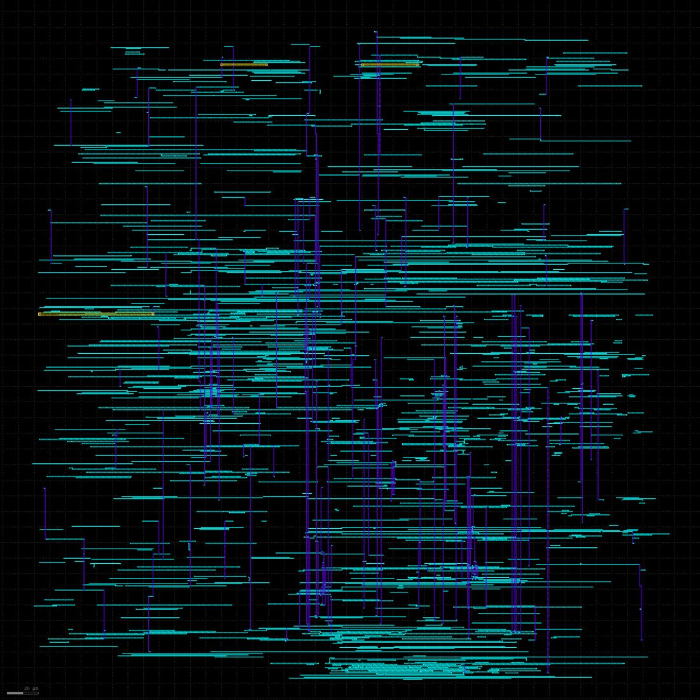

RTL to GDSII
2026
Verilog · RISC-V RV32I
cocotb · SymbiYosys
Yosys · OpenROAD · KLayout
SkyWater 130 nm
cocotb · SymbiYosys
Yosys · OpenROAD · KLayout
SkyWater 130 nm
Five-stage RISC-V processor from Verilog to DRC- and LVS-clean GDSII in SkyWater 130 nm
A five-stage pipelined RV32I core taken from RTL all the way to a finished chip layout using only open-source tools: verified against an independent reference model, functional coverage and formal proofs, then synthesized, placed, routed and signed off for timing at three process corners, DRC and LVS.
- Pipeline: five in-order stages across four synthesizable Verilog modules, with forwarding into execute from both the EX/MEM and MEM/WB registers, a write-through register file that removes the third forwarding path, a one-cycle load-use stall, and predict-not-taken branches with a two-cycle flush. Measured 0.869 instructions per cycle over 39,244 retired instructions.
- Simulation verification: a separate Python RISC-V simulator written from the specification without looking at the RTL, itself checked against all 40 official rv32ui compliance programs. A cocotb testbench compares all sixteen retirement fields of every instruction against it, per instruction rather than per cycle, so stalls and flushes cannot hide an error. 144 programs, 39,244 instructions, zero mismatches, and 103 of 103 functional coverage bins.
- Formal proofs, and the bug simulation could not find: five SymbiYosys property suites, two proved unbounded by k-induction. The core-level proof found that a branch target can land 2 past a word boundary and send fetch to an address that holds no instruction. No assembler or test generator emits such a target, so no amount of random stimulus would have reached it. The solver found it because instruction memory was a free variable. The RTL now traps on it, as the specification requires.
- Synthesis and layout: Yosys and ABC onto the sky130_fd_sc_hd library gave 5,811 cells and 1,375 flip-flops, and the synthesized netlist matches the reference model across 45 programs. A Python-driven OpenROAD flow runs floorplan through routing and extraction, ending in a 424.58 × 427.04 µm die with 8,059 nets and 315,103 µm of wire, and zero router DRC violations after seven routing passes.
- Timing at three corners: signing off at the typical corner alone looked finished and was not. The same layout failed setup by 15.38 ns at the slow corner and hold by 47 ps at the fast corner, and a hold failure cannot be fixed by slowing the clock. Rebuilding the flow to optimize against all three corners closed both, at +0.8409 ns setup at the slow corner and +0.0945 ns hold at the fast corner, using 3.03 mW. That gives two honest frequencies: 69.0 MHz on typical silicon and 32.3 MHz guaranteed across process, voltage and temperature. The limiting structure is a 29-gate ripple-carry chain in the adder.
- Signoff: the independent KLayout design rule deck found 64 minimum-area violations on met3 that the router’s own check reported as zero. A repair step grows each undersized pad on the manufacturing grid without breaking spacing, giving zero violations, and layout versus schematic matches across 10,422 instances.
Not everything is clean, and the report says so: 129 slew and 8 capacitance violations remain, 12 antenna nets are unrepaired, parasitic extraction is single-corner, and there is no metal fill. It is a core macro, not a whole chip.

Why it looks like this: you are looking down on 25,218 cells and about 315 mm of wire. Each teal streak is a wire on a horizontal routing layer and each purple line is on the vertical layer above it; routers alternate directions layer by layer. The densest bands are where the wide 32-bit buses cross the datapath." loading="lazy" decoding="async">